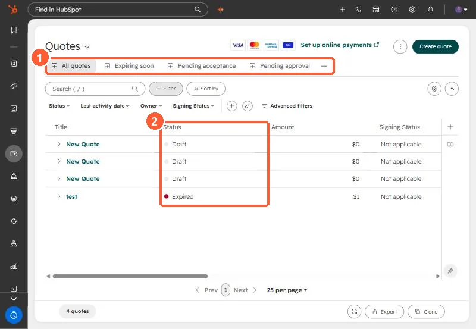

Short answer
The quotes index has views for expiring soon, pending acceptance and pending approval, with status and signing status columns. Quote approvals are set in Settings > Objects > Quotes > Approvals. HubSpot's KB says Sales Hub accounts keep legacy quotes after September 3, 2025, free accounts keep them only if they made a quote in the six months before that date, and Revenue Hub seats lose legacy quotes if legacy quote creation is turned off.
1. The index
My demo portal has three draft quotes and one expired one. The views across the top filter by what needs attention.


2. Statuses
An expired quote has passed the expiration date set when it was created. To see one, open it from the deal and view the PDF. The PDF link HubSpot generates expires after one hour.
3. Approvals
Go to Settings > Objects, choose Quotes, open Approvals, and switch approvals on. Standard approvals use simple rules. Advanced approvals set up an approval workflow.
4. Legacy quotes
- Sales Hub accounts keep legacy quotes after September 3, 2025.
- Free accounts keep them only if a quote was created in the six months before that date.
- Revenue Hub seats lose legacy quotes and templates if legacy quote creation is turned off.
- E-signatures on legacy quotes need Sales Hub. On newer quotes they need Revenue Hub.